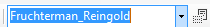

Un graphe est constitué d'un ensemble de noeuds reliés par des arêtes.
Un noeud est représenté par une forme rectangulaire, dont on peut modifier la taille, la position et les couleurs de fond et de bordure.
On peut lui ajouter un texte dont on peut choisir la police et la couleur.
Une arête est représentée par une ligne reliant deux noeuds. On peut choisir son épaisseur et sa couleur.
Les noeuds peuvent être supprimés (ce qui supprime les arêtes adjacentes) et déplacés.
En utilisant une bibliothèque créée par Microsoft Research, le programme permet un positionnement automatique des noeuds.
Plusieurs algorithmes sont disponibles .